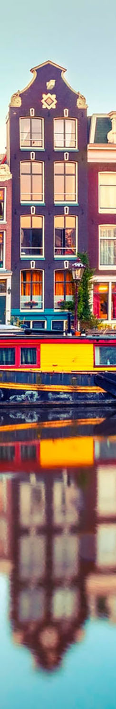

Бардівський соло-оркестр "Літо, вечір, Амтсердам" був створений і шо уж тепер поробиш...
Пісні співаються ротом під акомпонимент гітари, а щє іноді під супровід звуків "Досить!", "Побойтесь Бога!!!", "Чуєшь, недо-Окуджава, поліція вже їде!"
Лідер та засновник бардівського соло-оркестру - Пол МакКартні, відхрещується від свого дітеща. На усі запити, що до створенного їм оркестру, бурмоче щось іноземною накшталт: "yes, i like summer evening in Amsterdam. But it's not so often how I want. ... What? Orchestra? Neobard? No, hear for the first time." -скромнічає Пол.
Виконавець пісень обраний сайтом random.com за гріхи у минулому житті. Гадали, що цим спокутує гріхи, але стало тільки гірше.
Подекують, що дякі пісні лікують невиліквні хвороби. Але, якщо бути чесними, то деякі пісні и викликають такі хвороби - тому, те на те і віходить.
Але всеж таки рекомендуємо слухати парну кількість пісень (на всяк випадок).

Тут ви можете ознайомитись з піснями зі змістом та без нього.
Записані вони казна як: щось на диктофон, щось на мікрофон та здебільшого на телефон у котрому є мікрофон у диктофоні.
Виконавець пісень доклав усих зусиль для найкращього звучання та гармонійності мелодії. Бо музична освіта в 1 рік на домрі у музикальній школі - це на рік довше ніж ви сиділи у тюрмі (маю надію).
Не буду довго тримати Вас в очикуванні. Сідайте зручніше, бо це єдине від чого Вам буде приємно. Налаштовуйте вушні раковини та перебоночки до болю, ми починаємо.
Перелік аудичних страждань за назвою:
|
|
|
|
|


Ми вирішили до болю задіяти усі Ваші органи відчуття, тому наші пісні можна щє й дивитися.
Я вже мовчу, що також є твори із запахом, а виконавця можно трогати і він навіть відчуває біль, а не тільки приносить його. Я вже мовчу про післясмак після прослуховування.
Якість відео та контент зможе попестити катаракту навіть самому вібагливому глядачу. Навіть Хичкок виявив бажання взяти деякі кадри для своїх фильмів бо вони настільки жахливі, що жодного відео він так і не додивився.

Коли ти дивишься наші відео - ти розумієшь, чому Сатана не забрав в тебе зір та задаєшься питанням, чому це не зробив Бог. До перших відео ти гадав, що Бог мілосерден.
Нащадки братів Люм'єр досі ходят до церкви та ставлять свічки, щоб термінатор Т1000 повернувся в минуле та вбив матір їх славетних пращурів.
Одне з відео-страждань:
Відео, що є в наявності:
|
|
|
|
|
 ГОЛОВНА
ГОЛОВНА  ВІДЕО
ВІДЕО КВАРТИРНИК
КВАРТИРНИК ВІРШІ
ВІРШІ ФОТО
ФОТО